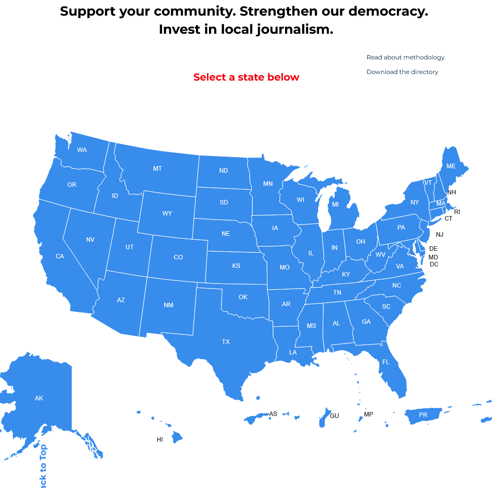

📚 Strategic MDM Interventions
Introduction
MDM continues to shape geopolitical dynamics, social trust, and public health outcomes. To combat these complex threats, it’s not enough to rely on a single strategy or actor. Governments, civil society, platforms, and individuals must all contribute through coordinated, evidence-based interventions.
This lesson draws from the Carnegie Endowment for International Peace’s comprehensive guide, “Countering Disinformation Effectively: An Evidence-Based Policy Guide†by Jon Bateman and Dean Jackson. It distills the guide’s key strategies into actionable modules, adapted to be relevant for the Indo-Pacific region, where multilingual populations, varying internet access, and different levels of platform regulation complicate disinformation response efforts.
Throughout this lesson, we’ll explore a layered framework of interventions—from strengthening local journalism and improving digital literacy to regulating social media platforms and enhancing state-level deterrence. Each strategy comes with its strengths and limitations, and their effectiveness depends on political context, resources, and stakeholder buy-in.
At the end of the lesson, you’ll apply your understanding to real-world scenarios and evaluate which interventions would be most effective based on context, actors involved, and the nature of the MDM threat.
Learning Objectives
By the end of this lesson, you will be able to:
Describe a range of evidence-based interventions for countering MDM.
Evaluate the strengths and weaknesses of various strategies.
Contextualize interventions for the Indo-Pacific region.
Apply strategic thinking to hypothetical MDM scenarios.
💡 No single tool is a silver bullet. Strategic, context-sensitive responses are the key to reducing the harm of malign influence.
1. Supporting Local Journalism
What It Is
Supporting local journalism means investing in independent, community-based news organizations that provide trusted information to the public. These outlets play a critical role in countering MDM by filling the information vacuum that MDM actors often exploit, especially in under-served areas.
Check out Media and Democracy Project’s Local Journalism Directory for Areas that interest you!

How It Works
MDM thrives where reliable information is scarce. Local journalists, who understand regional languages, cultures, and dynamics, are best positioned to provide accurate reporting and rapidly debunk false narratives. Strengthening their capacity ensures that communities have access to verified information, reducing their vulnerability to malign influence.
Evidence Base
Research shows that regions with robust local journalism are more resilient to disinformation. A 2021 study found that the closure of local newspapers in the U.S. correlated with increased political polarization and susceptibility to misinformation.
In the Indo-Pacific, countries like the Philippines and Indonesia have demonstrated the power of grassroots media networks to expose coordinated inauthentic behavior and debunk election-related hoaxes in real time.
Limitations & Challenges
Resource Constraints: Many local outlets struggle financially, especially in rural or linguistically diverse regions.
Political Pressure: Journalists in countries with limited press freedom may face intimidation, censorship, or violence.
Digital Reach: Legacy local media may lack the digital infrastructure to compete with viral disinformation on social platforms.
Indo-Pacific Example
📠Indonesia: During the 2019 presidential elections, local newsrooms like Tempo.co and independent watchdogs like Mafindo collaborated to monitor and debunk election-related hoaxes in Bahasa Indonesia and regional dialects. Their work helped counter viral WhatsApp chains and false narratives about ballot fraud.
Strategic Considerations
International donors and NGOs can fund media development programs that prioritize editorial independence.
Training programs can upskill local reporters in digital verification, OSINT tools, and safety protocols.
Governments can enact media policies that support free press while resisting the urge to regulate content under the guise of “fake news†suppression.
🧠Reflection Question: What role can local journalism play in countering disinformation during a health crisis or natural disaster in a rural area?
2. Media Literacy Education
What It Is
Media literacy education, like the course you’re going through now, equips individuals with the skills to critically assess information, recognize manipulation, and make informed decisions about what they read, share, and believe. It is a long-term, preventive strategy aimed at reducing the impact of MDM by strengthening societal resilience.
How It Works
Through formal education (e.g. school curricula), informal training (e.g. community workshops), or public awareness campaigns, media literacy helps people:
Identify misinformation and disinformation
Understand how algorithms and media framing influence perception
Evaluate source credibility
Recognize emotional or manipulative language
Evidence Base
Studies in Finland, France, and other countries with national media literacy strategies have shown improved public resilience to disinformation. Meta-analyses show that short, targeted interventions—such as “prebunking†techniques—can reduce susceptibility to false claims.
In the Indo-Pacific, youth-targeted media literacy efforts have shown promise, particularly in countries with high social media usage and limited regulatory oversight.
❗ On March 6, 2025, 25 senators were recorded on the senate floor in Honolulu, Hawaii in favor of media literacy education. It was a unanimously passed media literacy bill championed by Senator Mike Gabbard and will now move to the House Education Committee!
Limitations & Challenges
Scalability: National-level media literacy education requires curriculum reform and teacher training.
Digital Access: Media literacy can be harder to implement in areas with limited internet access or infrastructure.
Political Co-option: Governments may attempt to shape literacy programs to reflect partisan narratives.
âš ï¸ For example, in the Philippines under the Duterte administration, media literacy initiatives were sometimes criticized for focusing more on combating “anti-government†narratives than fostering open dialogue or independent thought. Similar concerns have been raised in other countries where ruling parties attempt to align information literacy with state messaging.
Indo-Pacific Example
📠Hawaii: The Young Pacific Leaders (YPL) Regional Workshop on Media Literacy and Journalism, hosted in Honolulu, brings together emerging leaders from across the Pacific to build skills in journalism, digital storytelling, fact-checking, and countering disinformation. The workshop emphasizes local context, indigenous knowledge systems, and the importance of culturally rooted, independent media in combating MDM across Oceania.
📠Philippines: The organization Break the Fake conducts workshops and school programs to train students and teachers in fact-checking, source verification, and responsible content sharing. This is critical in a country where Facebook and YouTube are primary information sources, and disinformation is often emotionally manipulative.
Check Out Media Literacy Now’s 2024 Media Literacy Policy Report > Executive Summary: Our annual analysis of state-by-state education policy shows the significant progress of state-level policymakers as well as other organizations, key institutions, and communities to recognize an urgent need for media literacy education and to take action. Policymakers who set the direction for education nationwide are stepping up — legislatures in more than half the states have held hearings or votes on media literacy education in committees or debates on the floor of statehouses. Eighteen state governors have signed bills concerning K-12 media literacy or digital citizenship education, and one legislature has passed two resolutions. We count 19 state legislatures that have taken action. Most notably, California, with the largest K–12 school population in the country, passed a comprehensive media literacy law that will redirect priorities and funding to media literacy curriculum and professional development. That is a major advancement that will reverberate across the country.
Strategic Considerations
Integrate media literacy into national education systems starting at primary and secondary levels.
Use local languages and culturally relevant examples.
Partner with social media influencers or celebrities to promote media literacy messages in digital campaigns.
🧠Reflection Question: In what ways could media literacy help counter state-sponsored disinformation campaigns targeting diasporic communities?
3. Fact-Checking
What It Is
Fact-checking is the process of verifying the accuracy of information circulating in public discourse—particularly viral claims, news stories, and social media posts. Fact-checking organizations, often operating independently or through media partnerships, identify false or misleading content and publicly correct it.
How It Works
Fact-checkers rely on open-source tools, official records, expert consultation, and digital forensics to assess the validity of claims. Their corrections are typically published on websites, in news outlets, or via social media. Many platforms now partner with fact-checkers to add warning labels or reduce the visibility of false content.
Evidence Base
Fact-checking has been shown to reduce belief in false claims, especially when corrections are issued quickly and clearly Brashier, et al. However, its impact may be limited if users are exposed to corrections long after encountering the misinformation or if they strongly identify with partisan narratives Pereira.
Limitations & Challenges
Reach vs. Speed: MDM spreads faster than fact-checks can respond.
Backfire Effects: In highly polarized environments, corrections can sometimes reinforce false beliefs.
Trust: People may distrust fact-checkers perceived as partisan or elite.
Indo-Pacific Example
📠India: BOOM Live and Alt News are prominent fact-checking platforms that regularly debunk viral misinformation in multiple languages, including Hindi, Bengali, and Tamil. During the COVID-19 pandemic, they corrected widespread medical hoaxes and conspiracy theories, reaching millions via WhatsApp and Twitter.
📠Malaysia: SEBENARNYA.MY is a government-supported fact-checking portal that verifies rumors and viral posts. It’s been used to counter election misinformation and vaccine-related hoaxes.
Strategic Considerations
Expand multilingual fact-checking networks to cover rural and underrepresented areas.
Promote fact-checking partnerships with local influencers, journalists, and educators.
Encourage platforms to algorithmically boost verified corrections alongside misinformation.
🧠Reflection Question: What role could a regional fact-checking network play in responding to MDM campaigns in the Indo-Pacific?
4. Labeling Social Media Content
What It Is
Labeling refers to the practice of attaching notices or warnings to online content that may be false, misleading, or manipulated. These labels can flag misinformation, link to authoritative sources, or notify users when a post has been altered (e.g. deepfakes or edited images).
How It Works
Social media platforms often partner with fact-checkers or internal moderation teams to detect questionable content and apply contextual labels. Labels may appear as:
Warnings (e.g. “This claim is disputed”)
Links to verified information (e.g. election updates)
Notices of media manipulation (e.g. “Altered photo”)
Some labels reduce content visibility in feeds; others simply provide added context.
Evidence Base
Labeling has been shown to reduce the perceived credibility of false information, especially when done clearly and consistently Martel et al.
However, inconsistent or overly cautious labeling can diminish trust, while overly aggressive labeling can provoke backlash or claims of censorship.
Limitations & Challenges
Inconsistency: Labels are not always applied evenly across languages, regions, or topics.
Information Gaps: Labeling may not keep up with fast-moving rumors or localized misinformation.
Distrust: Some users perceive labels as biased or authoritarian, especially if platform trust is low.
Indo-Pacific Example
📠Australia: During the 2022 elections, Facebook and Twitter used labels to flag misleading claims about voting procedures and promoted official links to the Australian Electoral Commission.
📠Taiwan: Civil society groups worked with platforms to label manipulated videos shared during local elections. One viral video was flagged for using spliced footage out of context to defame a candidate.
Strategic Considerations
Labels should be transparent, clear, and linked to trusted local sources.
Platforms must ensure regional equity in labeling policies—especially for non-English content.
Partnering with local NGOs and fact-checkers can improve cultural nuance and accuracy.
🧠Reflection Question: How might content labeling differ in effectiveness between an urban, digitally literate population and a rural population with limited media access?
5. Counter Messaging Strategies
What It Is
Counter messaging refers to the strategic creation and dissemination of narratives that directly challenge, undermine, or displace disinformation. These messages may fact-check false claims, offer alternative explanations, or promote narratives that reinforce democratic values and social cohesion.
How It Works
Unlike fact-checking (which often reacts to specific claims), counter messaging is proactive and persuasive. It can take many forms:
Public service announcements (PSAs)
Memes and social media campaigns
Influencer-led narratives
Humor and satire
Cultural storytelling
The goal is not only to correct falsehoods, but to build psychological resilience by shaping how people interpret future information.
Evidence Base
Studies suggest that emotional, narrative-driven, and culturally relevant messages are more effective than dry corrections. Humor and peer-led messages have shown particular promise in reducing belief in conspiracy theories and health misinformation.
“Prebunking”—exposing people to weakened forms of misinformation before they encounter it—has also been found effective in inoculating against manipulation.
Limitations & Challenges
Tone and Trust: Counter messages that appear condescending or politically motivated can backfire.
Volume vs. Virality: Disinformation often spreads faster than counter messages can be created or distributed.
Credibility of Messenger: Who delivers the message can matter more than the message itself.
Indo-Pacific Example
📠Vietnam: The government collaborated with popular TikTok influencers to share counter-narratives about COVID-19 safety, using humor, music, and localized slang. These videos reached millions of young viewers more effectively than official press briefings.
📠India: The organization Youth Ki Awaaz launched peer-led campaigns to debunk vaccine myths among young adults using personal stories, local languages, and accessible graphics.
Strategic Considerations
Tailor messages to local cultures, languages, and communication styles.
Use trusted community figures—teachers, religious leaders, influencers—as messengers.
Incorporate storytelling, visual content, and emotional appeals to boost engagement.
🧠Reflection Question: When might counter messaging be more effective than fact-checking? Can both be used together?
6. Cybersecurity for Elections and Campaigns
What It Is
Cybersecurity for elections and political campaigns involves safeguarding the digital infrastructure that supports democratic processes—from voter registration databases and ballot systems to campaign communications and candidate websites. The goal is to prevent tampering, data breaches, and hacking that can enable or amplify disinformation efforts.
How It Works
MDM actors—often state-sponsored—target vulnerabilities in electoral infrastructure to:
Leak sensitive data (real or fabricated) to influence public opinion
Hijack social media accounts to spread false narratives
Disrupt trust in the voting process through denial-of-service (DoS) attacks or digital forgeries
Cybersecurity includes technical defenses (firewalls, encryption, multi-factor authentication) and operational readiness (incident response planning, staff training, public communication strategies).
Evidence Base
Following foreign interference in the 2016 U.S. election, countries across Europe and Asia invested heavily in election cybersecurity. Evidence shows that even small interventions—like phishing awareness for campaign staff—can significantly reduce breach risks.
In the Indo-Pacific, where elections are frequent and often contentious, cybersecurity gaps remain a significant threat vector for MDM.
Limitations & Challenges
Resource Gaps: Many countries and political campaigns lack funding or technical expertise to implement robust cybersecurity.
Low Awareness: Candidates and campaign staff are often unaware of basic digital hygiene practices. AP Article on Houthi Attack Plans on Signal
Attribution Complexity: It’s often hard to trace cyberattacks to specific actors, complicating deterrence and response.
Indo-Pacific Example
📠Papua New Guinea: During the 2022 general elections, observers warned of poor cybersecurity and lack of transparency in digital systems, raising concerns about disinformation exploiting technical glitches or delays.
📠Australia: The Australian Signals Directorate has supported efforts to improve election security, including training political parties on phishing detection and securing digital communications.
Strategic Considerations
Invest in cybersecurity audits and simulations before elections.
Provide training and toolkits for political candidates and staff—especially in local or rural areas.
Communicate transparently with the public to prevent disinformation about technical issues (e.g. website downtime = fraud).
🧠Reflection Question: If you were advising a small political party in a developing country, what are the top three cybersecurity practices you would prioritize ahead of an election?
7. Statecraft, Deterrence, and Disruption
What It Is
Statecraft interventions use the tools of national power—diplomacy, sanctions, law enforcement, and intelligence—to deter or disrupt malign actors engaged in MDM. These strategies target the source of MDM, rather than just its effects, and are often led by governments or intergovernmental coalitions.
How It Works
States can take various actions to respond to foreign or domestic MDM campaigns:
Diplomatic pressure (e.g. naming and shaming)
Economic sanctions on actors or organizations involved in information warfare
Criminal prosecution of coordinated inauthentic behavior or cyber-enabled influence
Offensive cyber operations to disrupt disinformation infrastructure (e.g. botnets, troll farms)
These actions signal consequences for malign behavior and may raise the costs of conducting MDM operations.
Evidence Base
While harder to quantify, deterrence efforts have disrupted operations by groups like Russia’s Internet Research Agency. Public attribution, such as indictments by the U.S. Department of Justice or statements by the EU East StratCom Task Force, has helped expose disinformation campaigns and reduce their credibility.
Still, strategic deterrence is most effective when paired with transparency and multilateral coordination.
Limitations & Challenges
Attribution Difficulty: Proving who is behind a campaign can be technically and politically challenging.
Escalation Risk: Offensive cyber operations could provoke retaliation.
Uneven Capacity: Not all governments have the technical or diplomatic resources to lead such responses.
Indo-Pacific Example
📠Taiwan: The Taiwanese government actively monitors Chinese-linked disinformation campaigns targeting elections and civil society. In response, Taiwan has used a mix of public attribution, international partnerships, and digital diplomacy to expose influence operations.
📠India: Indian intelligence and cybersecurity agencies have traced and disrupted coordinated foreign social media campaigns that sought to inflame communal tensions or delegitimize institutions during national elections.
Check out the Senate Select Committee on Intelligence Report about Russia Interference in the 2016 Elections
Strategic Considerations
Build coalitions for intelligence sharing, especially across ASEAN and Indo-Pacific partners.
Increase transparency in attribution to enhance public trust and signal credibility.
Balance deterrence with diplomatic norms to avoid unintended conflict escalation.
🧠Reflection Question: What risks should a small or middle-power country consider before taking direct action against a suspected foreign disinformation campaign?
8. Removing Inauthentic Asset Networks
What It Is
Removing inauthentic asset networks involves dismantling coordinated groups of fake accounts, bots, trolls, or pages that manipulate online discourse by pretending to be legitimate users. These networks can amplify MDM, suppress dissent, or create the illusion of consensus.
This tactic is sometimes referred to as dismantling “Coordinated Inauthentic Behavior†(CIB).
How It Works
Platforms, cybersecurity researchers, and governments work together to:
Detect behavioral patterns (e.g. synchronized posting, copy-paste content)
Trace digital infrastructure (e.g. shared IPs or registration data)
Attribute accounts to known actors (e.g. troll farms or botnets)
Remove or block these accounts/pages from operating
Some platforms publish transparency reports listing networks they’ve taken down.
Evidence Base
Studies have shown that removing even small numbers of high-volume MDM accounts can significantly reduce the spread of false content Shao. For example, takedowns of Russian and Iranian troll networks before the 2020 U.S. election reduced their ability to reach and influence large audiences.
However, detection efforts remain uneven, especially in non-English languages and smaller platforms.
Limitations & Challenges
Evasion Tactics: Actors quickly adapt by creating new accounts or moving to less-regulated platforms.
False Positives: Legitimate activists or journalists may be wrongly flagged.
Transparency: Platforms are not always clear about criteria or enforcement practices.
Indo-Pacific Example
📠Philippines: In 2020 and 2021, Facebook removed hundreds of accounts linked to state-affiliated military actors and political PR firms engaged in coordinated harassment and disinformation. These networks targeted journalists, activists, and political opponents.
📠Myanmar: During the Rohingya crisis, Facebook removed dozens of military-linked accounts and pages spreading hate speech and inciting violence. This was one of the earliest large-scale CIB takedowns in the Indo-Pacific.
Check out The spread of low-credibility content by social bots
Strategic Considerations
Encourage multilingual monitoring and community reporting to improve detection in under-resourced regions.
Push platforms for greater transparency in takedown decisions.
Combine asset removal with public attribution and media education to reduce re-amplification of narratives.
🧠Reflection Question: What are the risks and benefits of allowing platforms to decide which networks are “inauthentic� How can civil society play a role in accountability?
9. Reducing Data Collection and Targeted Ads
What It Is
This intervention targets the business model that enables microtargeted disinformation: the large-scale collection of user data for behavioral advertising. By limiting how much data platforms collect—and how precisely they can target users—governments and regulators aim to reduce the effectiveness of manipulative or divisive ad campaigns.
How It Works
Key approaches include:
Restricting third-party tracking and data brokers
Requiring opt-in consent for data collection
Limiting or banning political microtargeting
Enforcing data minimization and privacy-by-design principles
The idea is that with less granular data, malign actors will find it harder to tailor messages for psychological manipulation or voter suppression.
Evidence Base
Investigations into election interference (e.g. Cambridge Analytica) have shown how harvested personal data can be used to target individuals with tailored propaganda. Subsequent regulatory reforms in the EU (GDPR) and California (CCPA) have begun to limit these practices, though enforcement remains inconsistent.
Reducing microtargeting capacity can blunt the effectiveness of disinformation campaigns that rely on dividing audiences based on race, religion, region, or ideology.
Limitations & Challenges
Platform Resistance: Tech companies have financial incentives to retain data-driven ad models.
User Behavior: Many users still accept default privacy settings or ignore consent notices.
Policy Lag: Laws often struggle to keep pace with new tracking technologies or workarounds.
Indo-Pacific Example
📠India: During the 2019 elections, concerns were raised about microtargeted political ads on Facebook and WhatsApp. A lack of transparency about who was targeted and how fueled criticism and calls for regulation.
📠Australia: The Australian Competition and Consumer Commission (ACCC) has recommended stronger regulation of ad tech and digital platforms to protect consumer privacy and prevent data misuse in political influence operations.
Strategic Considerations
Encourage privacy legislation that includes transparency around ad targeting.
Support civil society audits of platform ad libraries and targeting mechanisms.
Push for platform-level tools that allow users to control data sharing and ad personalization.
🧠Reflection Question: How might reduced access to user data change the tactics used by disinformation actors? Would it shift them toward broader narratives or new platforms?
10. Changing Recommendation Algorithms
Image Credit: DistrictDataLabs
What It Is
Recommendation algorithms determine what content users see on social media, video platforms, and search engines. These systems often prioritize engagement—likes, clicks, shares—over accuracy, which can amplify sensational, polarizing, or misleading content. Reforming these algorithms is a key strategy to reduce the virality of MDM.
How It Works
Platforms can reduce disinformation amplification by:
Demoting low-quality or unverified content
Elevating trusted sources in search and recommendation results
Breaking “rabbit holes†by diversifying suggested content
Reducing algorithmic promotion of repeat misinformation offenders
Some interventions involve platform redesign (e.g. turning off autoplay), while others use machine learning to de-rank certain types of content.
Evidence Base
Research has shown that YouTube’s algorithm once disproportionately recommended conspiracy theories and extreme content. Adjustments made in 2019 reduced the visibility of such content by over 70%. Source
Facebook and Twitter have experimented with downranking misleading posts and elevating public health or election information hubs. However, transparency about algorithmic changes remains limited.
Limitations & Challenges
Black Box Systems: Platforms rarely disclose how algorithms work, making external evaluation difficult.
Trade-offs: Reforms may reduce engagement, which can affect platform revenue.
Unintended Biases: Algorithmic changes can unintentionally suppress marginalized voices or independent journalism.
Indo-Pacific Example
📠New Zealand: Following the Christchurch mosque shootings in 2019, the government advocated for global platform reform, highlighting how recommendation systems contributed to the radicalization of the shooter. This led to the Christchurch Call to Action, which calls for responsible algorithm design as one of four priorities for eliminating terrorist and violent extremist content online.
📠Indonesia: TikTok has faced scrutiny for promoting religious disinformation and extremist content during elections. Civil society groups have called for transparency in how TikTok’s algorithm promotes or demotes content in Bahasa Indonesia and regional dialects.
Strategic Considerations
Push for algorithmic transparency and independent audits of recommender systems.
Encourage platforms to offer user controls to customize or opt out of recommendation algorithms.
Combine algorithmic reform with media literacy to help users navigate suggested content critically.
🧠Reflection Question: What are the risks of relying on algorithm changes to fight disinformation? What accountability mechanisms should be in place?
Lesson Recap
In this lesson, we explored a comprehensive set of strategic interventions designed to counter MDM. These strategies span multiple layers of society—local, platform, state, and international—and emphasize that no single approach is sufficient on its own. Instead, effective responses require coordination, cultural relevance, and adaptability to local contexts.
Here’s a quick recap of the strategies we examined:
“Countering Disinformation Effectively: An Evidence-Based Policy Guide”
Supporting Local Journalism: Ensures trusted information reaches underrepresented communities.
Media Literacy Education: Builds critical thinking skills and inoculates against manipulation.
Fact-Checking: Verifies claims and provides timely corrections.
Labeling Social Media Content: Adds context to potentially misleading posts.
Counter Messaging Strategies: Uses narratives, emotion, and culture to reshape discourse.
Cybersecurity for Elections and Campaigns: Protects digital infrastructure from manipulation.
Statecraft, Deterrence, and Disruption: Uses government power to confront malign actors.
Removing Inauthentic Asset Networks: Dismantles the infrastructure of disinformation.
Reducing Data Collection and Targeted Ads: Limits microtargeting capabilities.
Changing Recommendation Algorithms: Reforms the systems that amplify disinformation.
Looking Ahead: Generative AI: Anticipates the next frontier in disinformation threats.
Together, these tools offer a multi-pronged framework for building resilience against malign influence. However, their application must be context-specific—shaped by political realities, technological access, and cultural dynamics, especially across the diverse Indo-Pacific region.